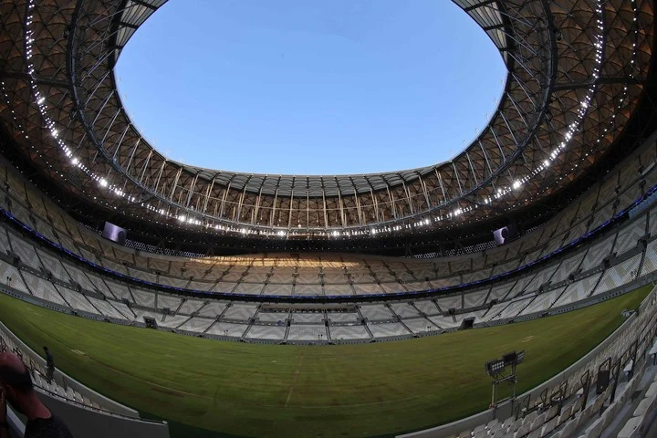
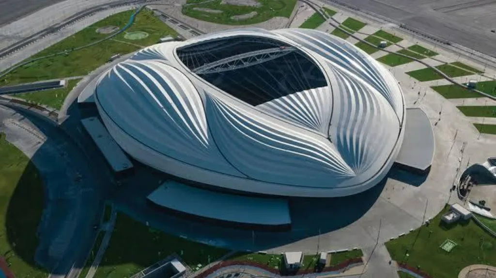
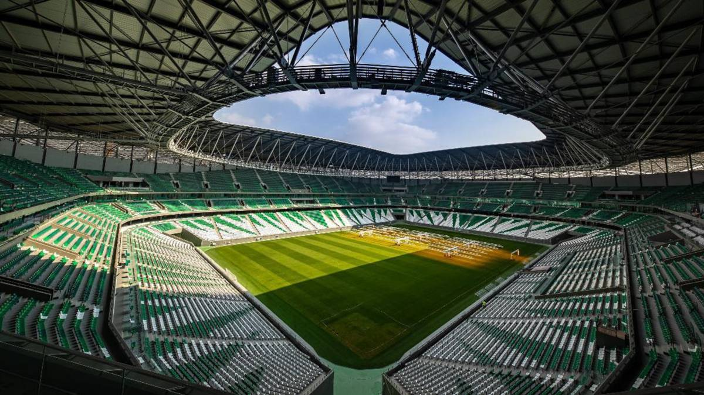
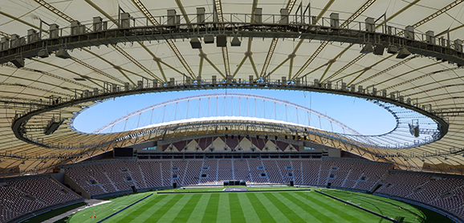
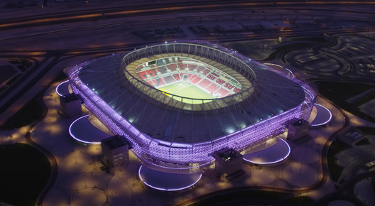
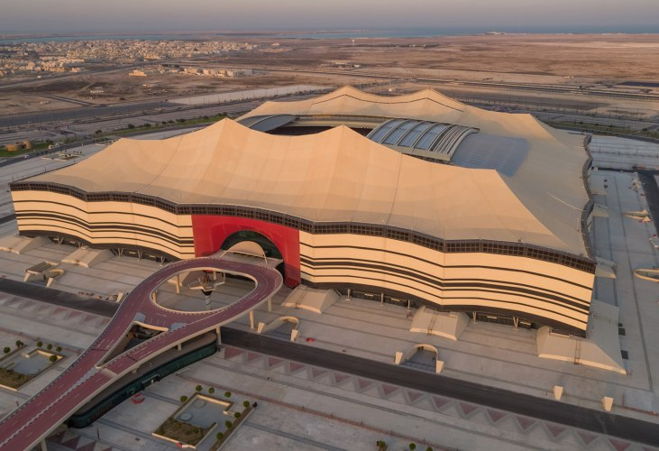
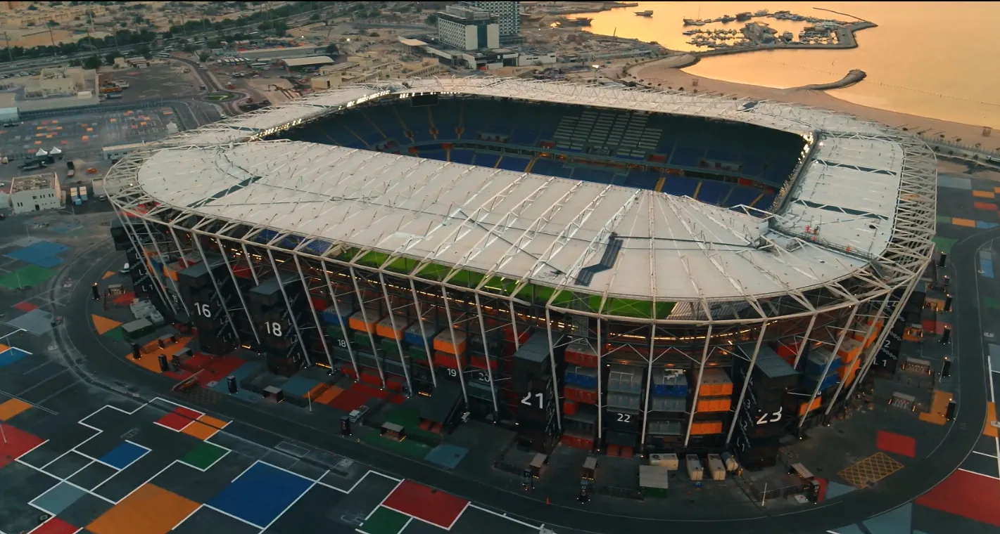
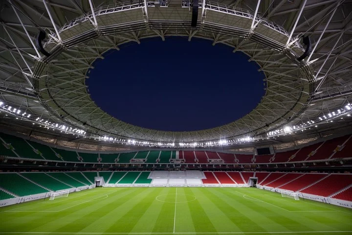

Estadio Lusail
94.500 espectadores

Al Janoub
40.000 espectadores

Estadio Ciudad de la Educación
45.350 espectadores

Estadio Internacional Khalifa
50.000 espectadores

Estadio Ahmed bin Ali
44.740 espectadores

Estadio Al Bayt
60.000 espectadores

Estadio 974
40.000 Espectadores

Estadio Al Thumama
69.000 Espectadores
